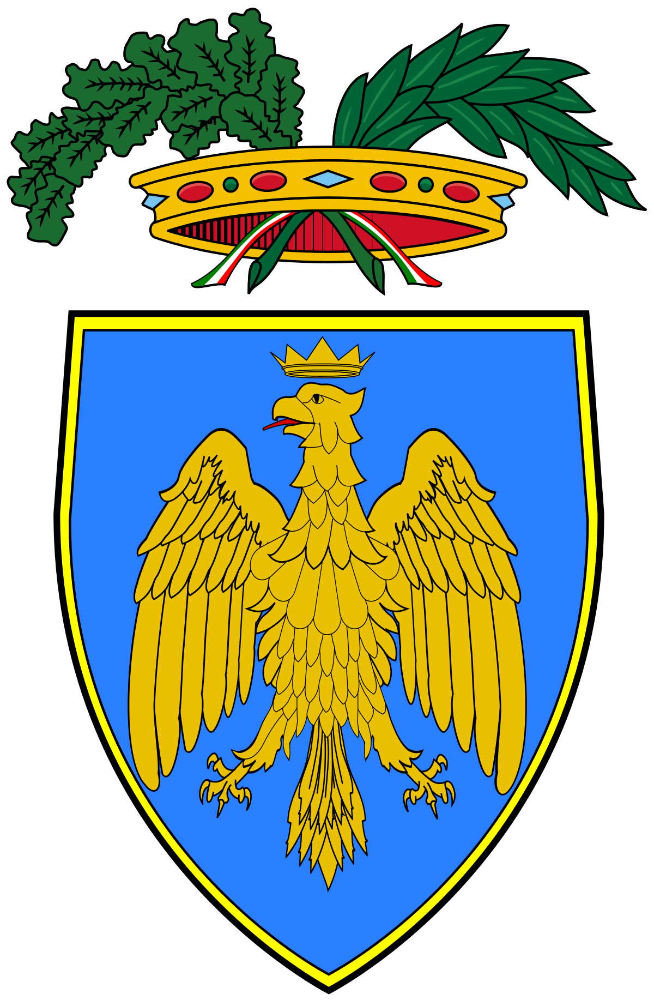
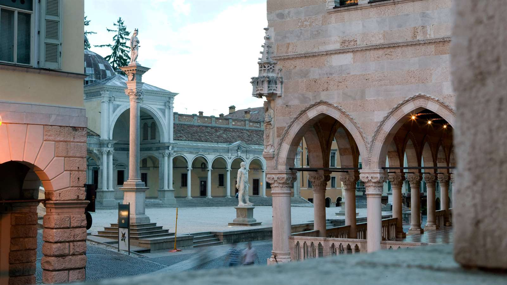

Udine


Udine è un comune italiano di 97 754 abitanti del Friuli-Venezia Giulia, considerato l'ultima e attuale capitale storica del Friuli (dopo Aquileia e Cividale del Friuli): già capoluogo dell'omonima provincia, è sede dell'omonimo ente di decentramento regionale (EDR), istituito con Legge regionale 29 novembre 2019, n. 21 e operativo dal 1º luglio 2020.
G. Frau ipotizza che "Udine" derivi da un toponimo pre-latino, una formazione dalla radice mammella o colle, seguita da un suffisso non del tutto chiaro. Prime attestazioni sono: Udene (983), Utinum (latinizzazione da Ud-; attorno al 1000). Un'altra possibile etimologia è la derivazione da varianti longobardo-sassoni del teonimo "Odino" (scandinavo Odhinn, longobardo Guodan,sassone Uoden). Infatti, i Longobardi, un raggruppamento di popoli di origine germanica che includeva i Longobardi veri e propri e un vasto numero di Sassoni, tra gli altri, attorno al VI secolo si insediarono a partire da questa zona prima di espandersi al resto del Nord Italia (Lombardia in senso lato). Non a caso Cividale del Friuli era un importante centro di questa popolazione. Si noti anche come il nome sloveno della città, Videm, sia un ipercorrettismo sviluppato nel XIX secolo sulla base di toponimi identici in Slovenia, laddove il nome precedente, e più proprio, della città in sloveno era Vidan.
Cenni geografici
La città è situata al centro della regione storica friulana. Dista, in linea d'aria, poco più di 20 km dalla Slovenia, e circa 54 km dall'Austria. Ciò la pone in una posizione strategica, presso l'intersezione delle direttrici europee est-ovest (Corridoio V o Mediterraneo) e nord-sud (Via Iulia Augusta, ora riconosciuta dall'Unione europea come parte del Corridoio Baltico-Adriatico), sulla via che porta verso l'Austria e verso l'est europeo.
Sorge nell'alta pianura, a pochi chilometri dalla fascia collinare, ed è costeggiata dal torrente Cormor a ovest e dal torrente Torre ad est. Al centro della città si trova a un colle isolato, in cima al quale è situato il castello: secondo la leggenda il colle è stato edificato da Attila per ammirare l'incendio che lui stesso provocò alla città di Aquileia. In realtà si pensava che fosse formato da rocce conglomeratiche antiche più di 100 000 anni, mentre recenti scavi arecheologici hanno dimostrato che si tratta di un rilievo artificiale, privo di rocce.
Cenni storici

I primi documenti che ne attestano l'esistenza risalgono al 983, anno in cui Udine viene nominata in un editto dell'Imperatore Ottone I. Essendo situata al centro della pianura friulana, accresce presto la sua importanza e diviene il centro principale della regione, a discapito di Cividale del Friuli (Forum Iulii) e di Aquileia, che precedentemente erano le città più importanti del Friuli. Con l'istituzione della Patria del Friuli, stato facente parte del Sacro Romano Impero, Udine diviene la capitale del nuovo Stato nonché sede del Patriarca di Aquileia. Nel Castello di Udine ebbe sede il Parlamento della Patria del Friuli, uno dei primi esempi di assemblea parlamentare in Europa. Nel 1420 Venezia conquista militarmente Udine dopo un lungo assedio, mettendo fine ai quattro secoli di vita della Patria del Friuli. Dopo la Restaurazione in seguito alle guerre napoleoniche, viene assegnata all'Impero Austro-Ungarico, ed entra a far parte sello Stato italiano a partire dalla Terza Guerra di Indipendenza, nel 1866, assieme alla parte occidentale e centrale del Friuli.
Il clima
Su territorio sono presenti la stazione meteorologica di Udine Centro, la stazione meteorologica di Udine Campoformido e la stazione meteorologica di Udine Rivolto e dalle osservazioni rilevate risulta che Udine ha clima continentale temperato, con temperature abbastanza elevate d'estate e relativamente rigide d'inverno, ma con minor continentalità rispetto alle città della pianura Padana centrale e occidentale. L'inverno è la stagione meno piovosa, mentre d'estate sono frequenti i fenomeni temporaleschi, anche accompagnati da forti grandinate. Nel complesso risulta essere uno dei capoluoghi di provincia più piovosi d'Italia. Udine è comunque una delle zone meno nevose delle pianure settentrionali, con circa 10 cm di precipitazioni nevose annuali. La decrescita rispetto ai primi decenni del secolo scorso tuttavia è minore rispetto a molte città del Nord-Ovest italiano (13 cm la media a Udine nel 1910, Torino invece ha perso ben 28 cm di nevosità, passando da 55 a 27). Dopo il decennio 1991–2000, con una bassissima media nevosa (4 cm), il decennio attuale mostra un discreto aumento (media di 12 cm), grazie alle abbondanti nevicate del 2005 e 2010. Le nevicate più abbondanti dal gennaio 1985 (30 cm di accumulo) furono:
- gennaio 1987 (40 cm)
- 31 dicembre 1996 (10 cm)
- 21 febbraio 2005 (8 cm)
- 3 marzo 2005 (15 cm)
- 29 dicembre 2005 (20–25 cm)
- 17 dicembre 2010 (10–15 cm)
Spesso sono differenti gli accumuli da nord a sud della città: verso nord infatti c'è meno disturbo eolico e spesso maggior esposizione alle correnti di SW, vere fautrici delle rare nevicate udinesi. La classica configurazione da neve per Udine è la formazione di un minimo depressionario nel golfo ligure e la sua traslazione verso il golfo di Venezia, con la formazione contemporanea di un minimo a occhiale. Un caso eccezionale fu il gennaio '85, quando un cuscino freddo resistette ai venti di scirocco formatosi con le straordinarie temperature dei giorni precedenti (record di freddo con −14,8 °C).